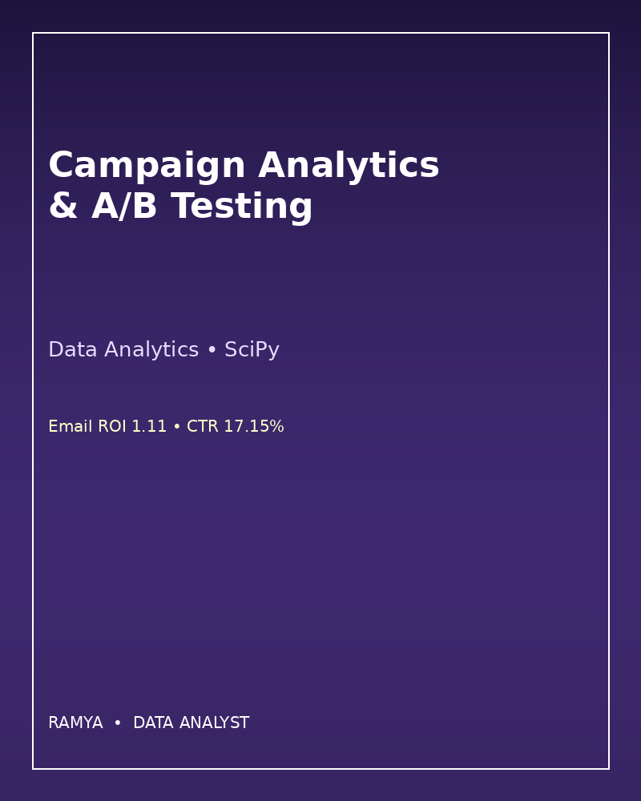
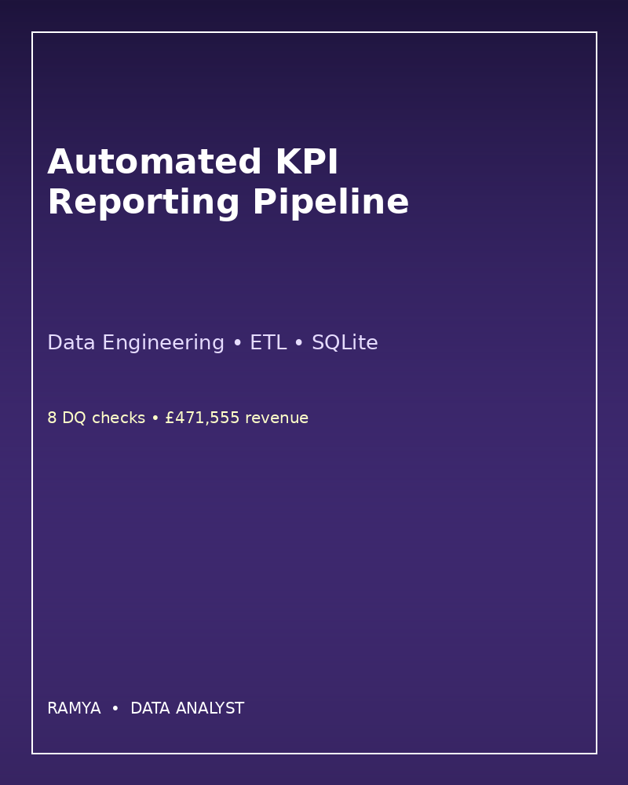
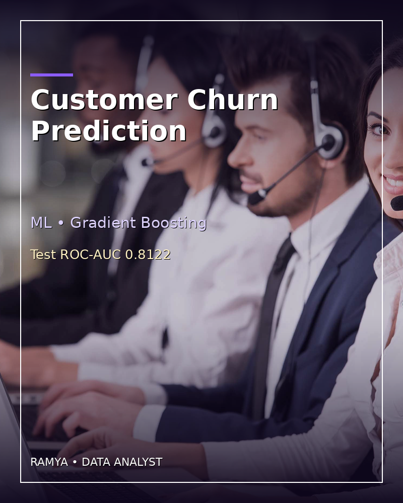
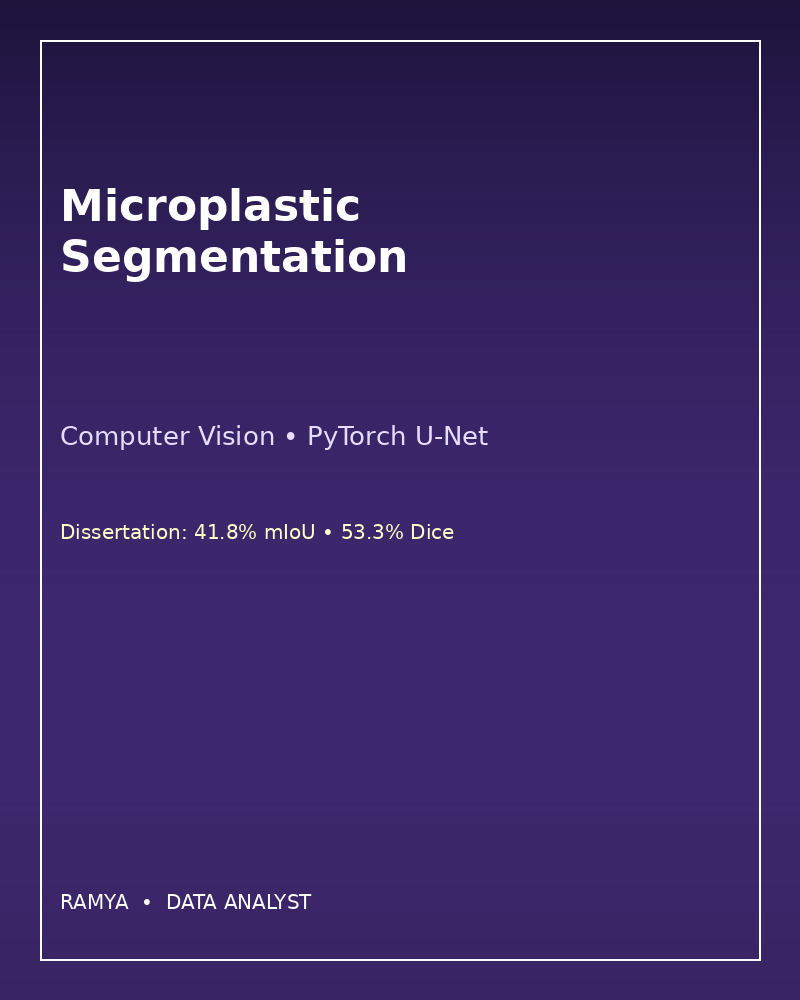
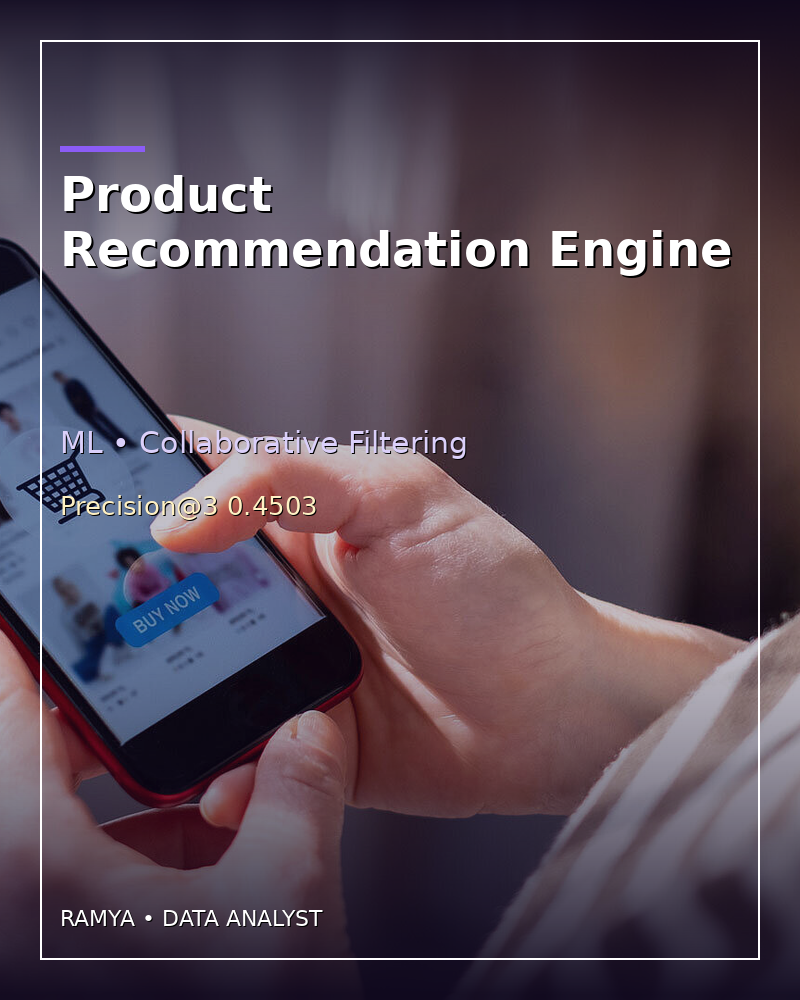

MSc Artificial Intelligence, Aston University. Data Analyst at Capgemini. I turn data into dashboards, pipelines and machine learning models.
MSc Artificial Intelligence graduate (Aston University, 2025–2026) with hands-on experience in Machine Learning, Deep Learning, Computer Vision, Data Analytics and AI-driven problem solving. Data Analyst at Capgemini, Bangalore (May 2024 – Apr 2025): Python, SQL and Excel analysis, Tableau and Power BI dashboards, data cleaning and validation, EDA, automated reporting, and cloud data migration support. B.Tech in Electrical and Electronics Engineering, Dayananda Sagar Academy of Technology and Management (2019–2023, CGPA 7.49/10). Based in the United Kingdom.
Data Analytics • SQL • RFM
£360,215 revenue • AOV £240.14
Data Analytics • SciPy
Email ROI 1.11 • CTR 17.15%
Data Engineering • ETL • SQLite
8 DQ checks • £471,555 revenue
ML • Gradient Boosting
Test ROC-AUC 0.8122
Computer Vision • PyTorch U-Net
Dissertation: 41.8% mIoU • 53.3% Dice
ML • Collaborative Filtering
Precision@3 0.4503Python, R, SQL, Pandas, NumPy, Scikit-learn, TensorFlow, PyTorch, Power BI, Tableau, Excel, Apache Spark, Hadoop, Hive, Kafka, AWS, Git, GitHub, RAG, NLP, BERT, Recommender Systems
Data Analyst — Capgemini, Bangalore (May 2024 – Apr 2025)
MSc Artificial Intelligence — Aston University (2025–2026) — Dissertation: microplastic segmentation, 41.8% mIoU, 53.3% Dice
B.Tech EEE — Dayananda Sagar Academy (2019–2023, CGPA 7.49/10)
Lloyds Banking Group — Data Science (Forage) • British Airways — Data Science (Forage) • J.P. Morgan — SQL (Forage) • BCG X — Data Visualisation (Forage) • Deloitte — Data Analysis (Forage) • Accenture — Software Development Life Cycle (Forage)
Email: ramyakrishnaparimi@gmail.com • LinkedIn • GitHub
Data Analytics • SQL • RFM
Key metric: £360,215 revenue • AOV £240.14
All underlying data is SYNTHETIC except the microplastic dissertation, whose real results are cited in its README. Code, SQL and full results are in the GitHub repository.
View on GitHubData Analytics • SciPy
Key metric: Email ROI 1.11 • CTR 17.15%
All underlying data is SYNTHETIC except the microplastic dissertation, whose real results are cited in its README. Code, SQL and full results are in the GitHub repository.
View on GitHubData Engineering • ETL • SQLite
Key metric: 8 DQ checks • £471,555 revenue
All underlying data is SYNTHETIC except the microplastic dissertation, whose real results are cited in its README. Code, SQL and full results are in the GitHub repository.
View on GitHubML • Gradient Boosting
Key metric: Test ROC-AUC 0.8122
All underlying data is SYNTHETIC except the microplastic dissertation, whose real results are cited in its README. Code, SQL and full results are in the GitHub repository.
View on GitHubComputer Vision • PyTorch U-Net
Key metric: Dissertation: 41.8% mIoU • 53.3% Dice
All underlying data is SYNTHETIC except the microplastic dissertation, whose real results are cited in its README. Code, SQL and full results are in the GitHub repository.
View on GitHubML • Collaborative Filtering
Key metric: Precision@3 0.4503
All underlying data is SYNTHETIC except the microplastic dissertation, whose real results are cited in its README. Code, SQL and full results are in the GitHub repository.
View on GitHub